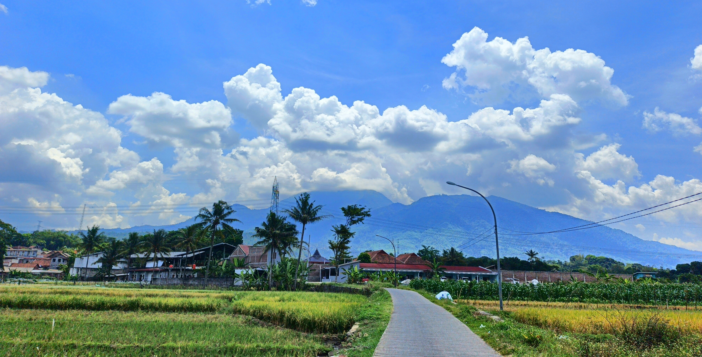
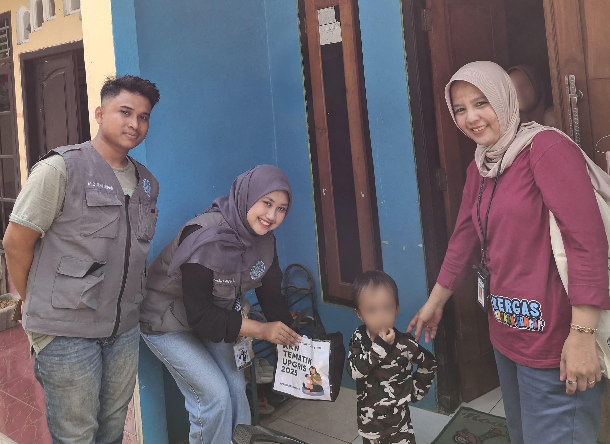
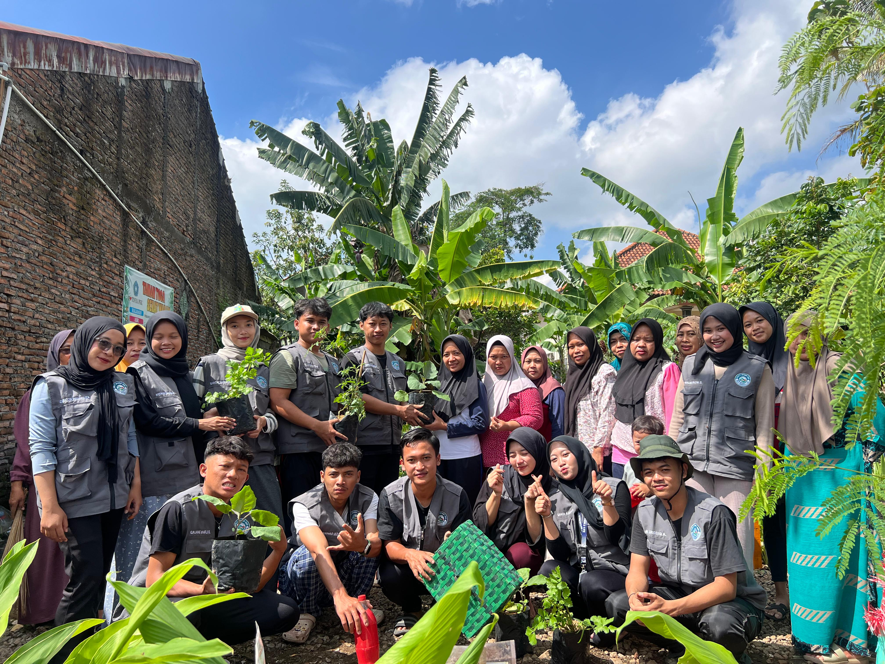
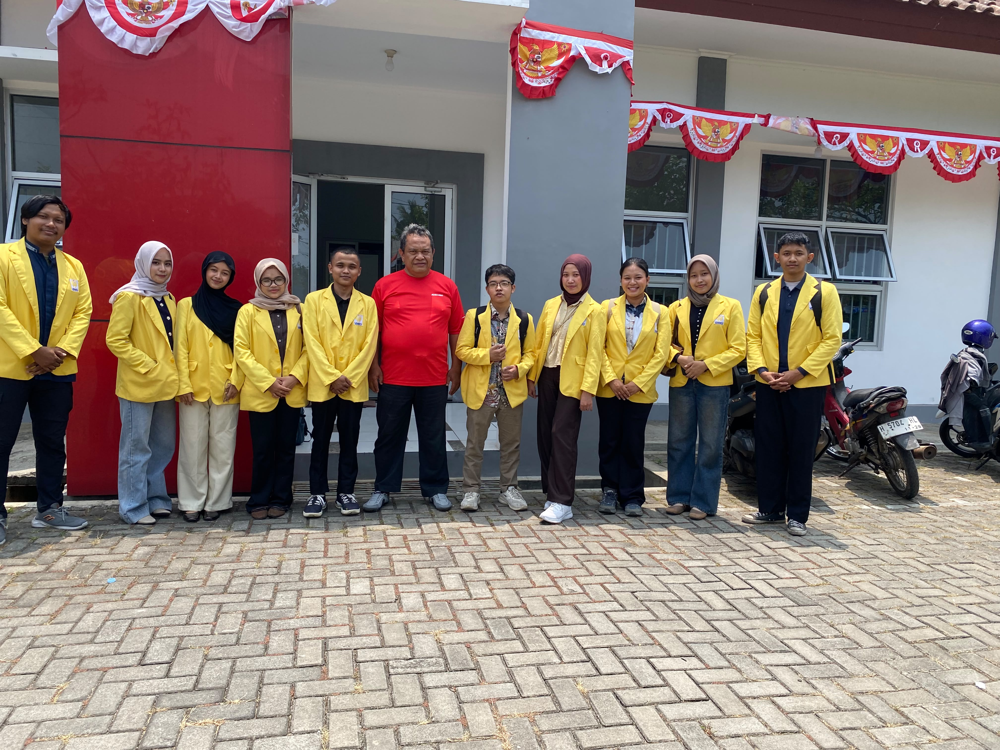
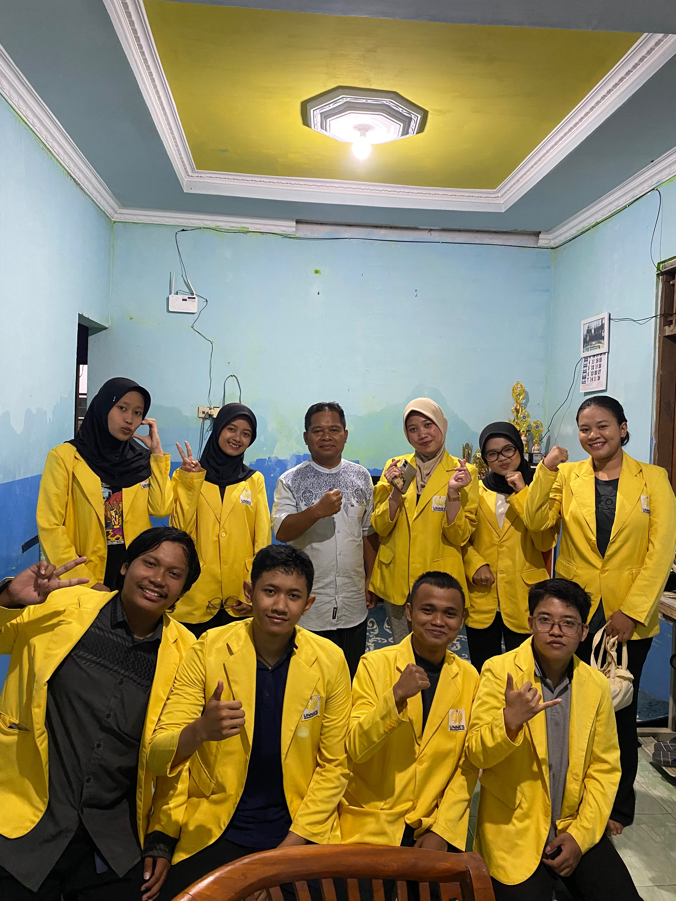
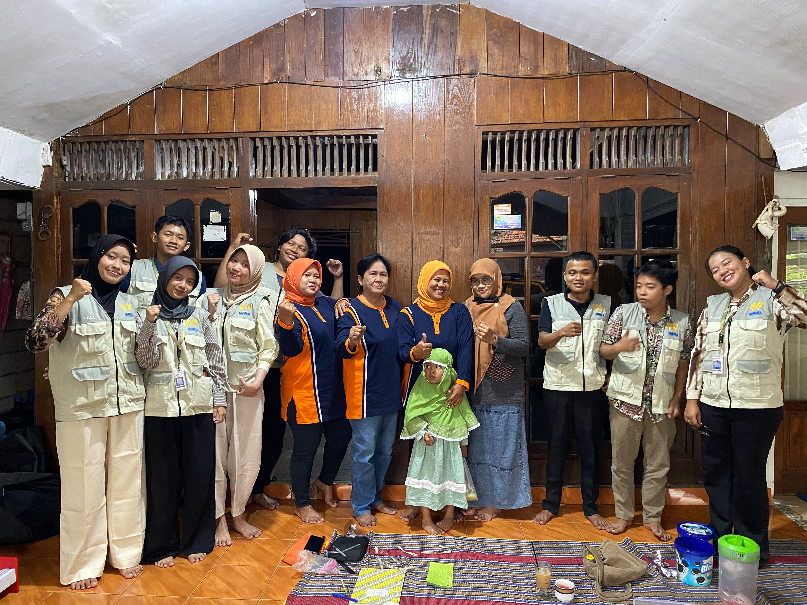
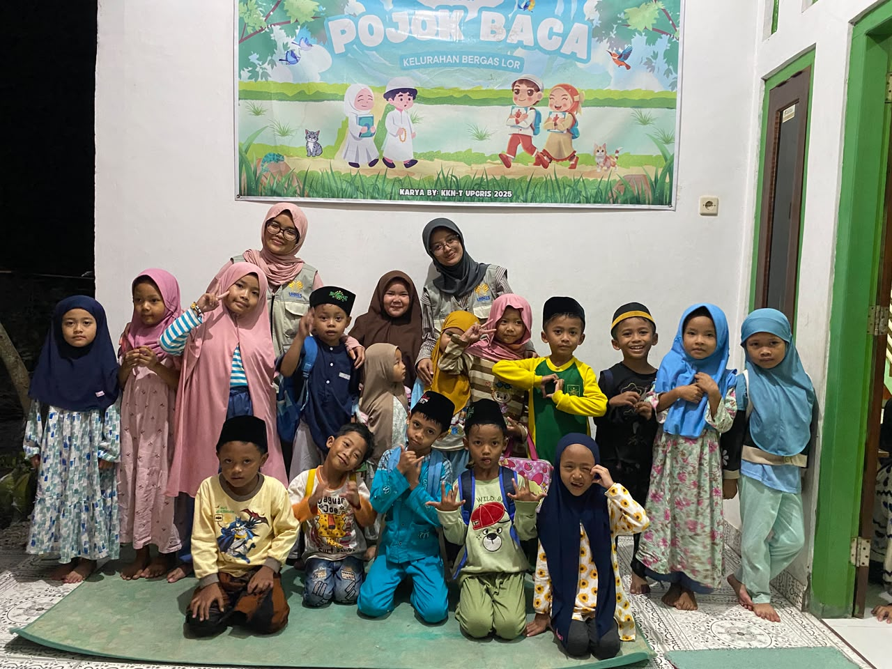
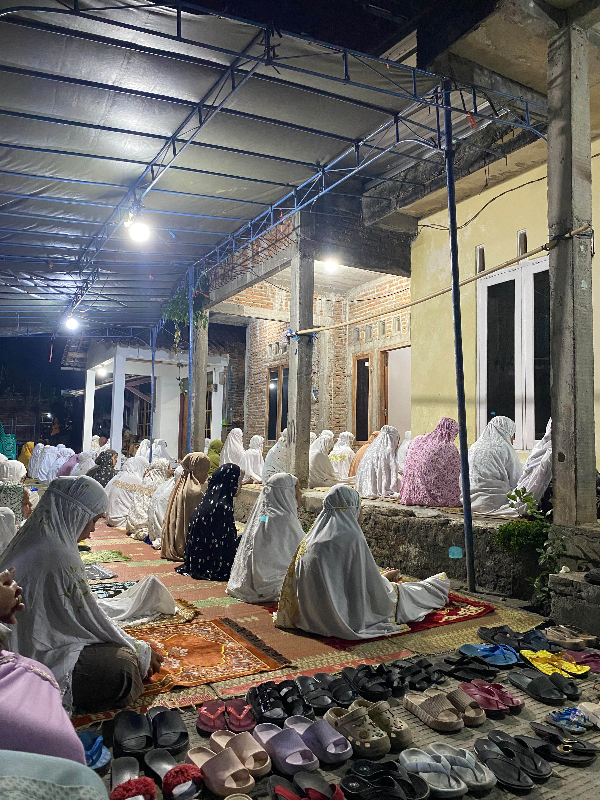
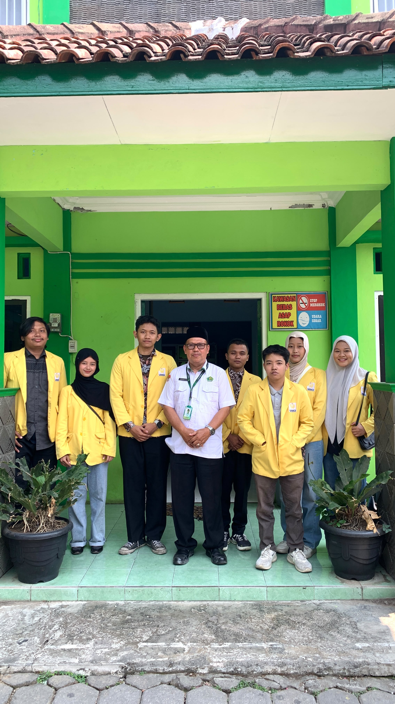
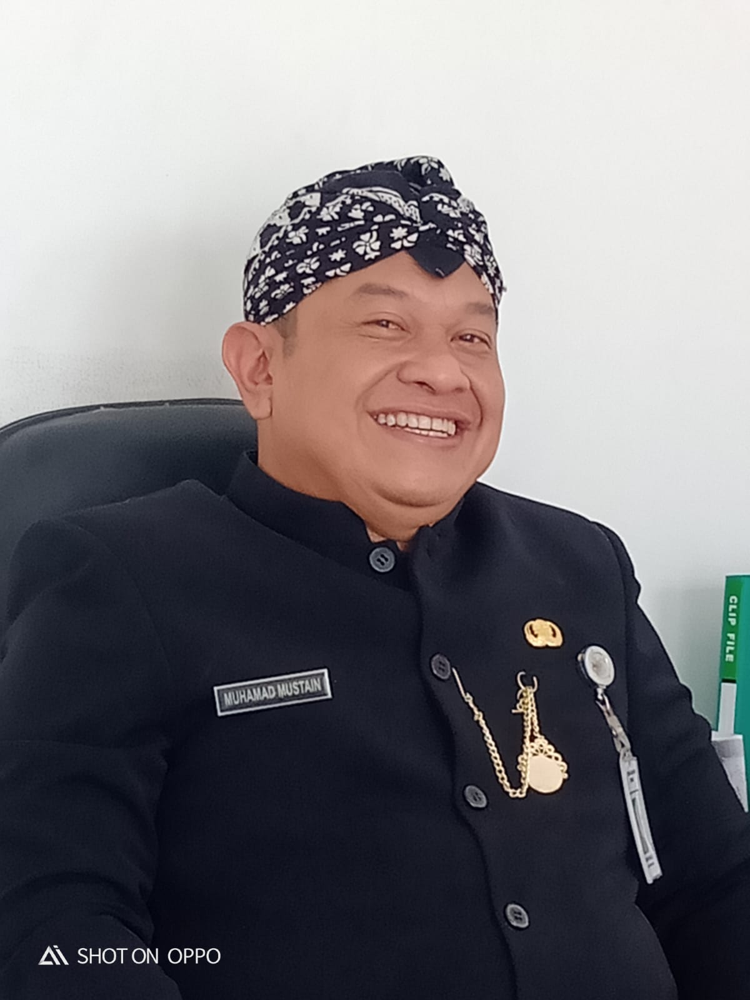

Profil Kelurahan
Bergas Lor
Mengenal lingkungan, masyarakat, potensi wilayah, serta semangat kebersamaan Kelurahan Bergas Lor.
Jelajahi Profil ↓
Mengenal Lingkungan
Bergas Lor
Lingkungan yang tumbuh melalui kebersamaan, kepedulian, dan partisipasi masyarakat.

Foto Lingkungan Bergas Lor
Tambahkan foto atau peta wilayah kelurahanLingkungan yang Hangat dan Penuh Kebersamaan
Kelurahan Bergas Lor merupakan bagian dari wilayah Kabupaten Semarang, Jawa Tengah. Halaman profil ini menjadi sarana untuk memperkenalkan lingkungan kelurahan, kehidupan masyarakat, serta potensi lokal yang dimiliki.
Lingkungan yang nyaman dapat diwujudkan melalui kepedulian terhadap kebersihan, penghijauan, keamanan, dan kegiatan sosial. Semangat gotong royong menjadi salah satu nilai penting dalam membangun kehidupan masyarakat yang harmonis.
Melalui kerja sama antara pemerintah kelurahan dan masyarakat, berbagai potensi lokal diharapkan dapat terus dikembangkan demi mendukung kesejahteraan bersama.
Menjaga Bergas Lor Tetap Asri
Lingkungan yang bersih dan nyaman dimulai dari kepedulian bersama. Mari menjaga kebersihan, merawat tanaman, dan membangun kebiasaan baik di sekitar kita.



Dokumentasi Kegiatan KKN
Kumpulan dokumentasi kegiatan mahasiswa KKN bersama masyarakat Kelurahan Bergas Lor.










Salam Hangat untuk
Masyarakat Bergas Lor
Assalamu’alaikum warahmatullahi wabarakatuh.
Puji syukur kita panjatkan ke hadirat Tuhan Yang Maha Esa. Selamat datang di website Kelurahan Bergas Lor, sebuah media informasi yang diharapkan dapat mendekatkan pemerintah kelurahan dengan masyarakat.
Website ini diharapkan menjadi sarana untuk memperoleh informasi mengenai profil kelurahan, kegiatan masyarakat, potensi wilayah, dan pelayanan publik. Kami juga berharap media ini dapat mendukung komunikasi yang lebih terbuka antara pemerintah dan warga.
Mari kita terus menjaga kebersamaan, meningkatkan kepedulian terhadap lingkungan, serta berpartisipasi dalam membangun Kelurahan Bergas Lor yang lebih baik, nyaman, dan sejahtera.
Terima kasih atas dukungan dan partisipasi seluruh masyarakat.
Wassalamu’alaikum warahmatullahi wabarakatuh.
Bergas Lor, Tumbuh Bersama
Mari berpartisipasi menjaga lingkungan dan mendukung perkembangan Kelurahan Bergas Lor.